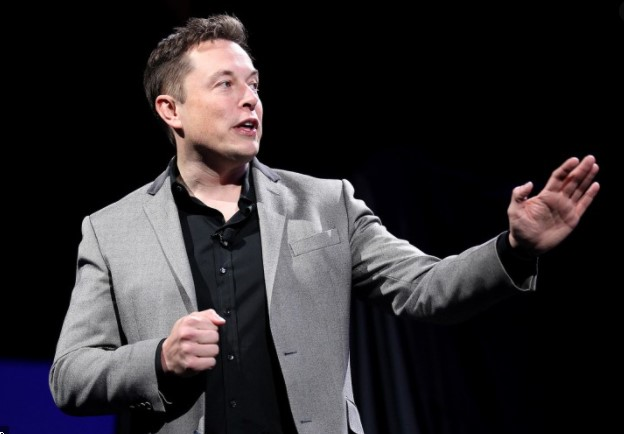

Tech billionaire Elon Musk has hauled in a combined $40.9 million for three adjacent homes in Bel-Air.(Luis Sinco / Los Angeles Times)
1971
Elon Reeve Musk was born on June 28, 1971, in Pretoria, Transvaal, South Africa.
1989
Musk entered Queen's University in Canada.
1992
study economics and physics at the University of Pennsylvania.
1994
Musk held two internships in Silicon Valley during the summer
1995
Musk was accepted to a Ph.D. program in energy physics/materials science at Stanford University in California.
1995
Musk and his brother Kimbal along with Greg Kouri started Zip2, a web software company
1997
Graduated Bachelor of Science (BS) degree in economics from the Wharton School and a Bachelor of Arts (BA) degree in physics from the College of Arts and Sciences
1999
Compaq acquired Zip2 for US$307 million in cash[60] in February.
1999
March, Musk co-founded X.com, an online financial services and e-mail payment company, with US$10 million from the sale of Zip2
2002
PayPal was acquired by eBay for US$1.5 billion in stock, of which Musk received US$165 million
2001
Musk conceived Mars Oasis, an idea to land a miniature experimental greenhouse on Mars, containing food crops growing on Martian regolith, in an attempt to reawaken public interest in space exploration
2004
Musk led the Series A round of investment in February, joining Tesla's board of directors as its chairman
2016
Musk owned about 28.9 million Tesla shares, which equated to about 22% of the company.